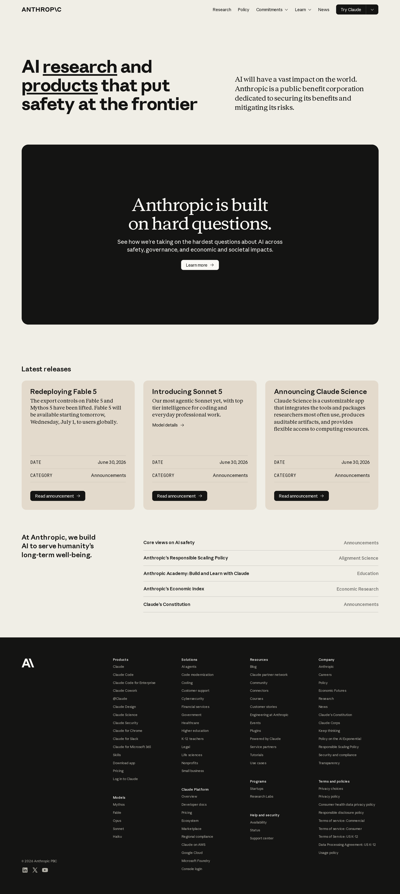
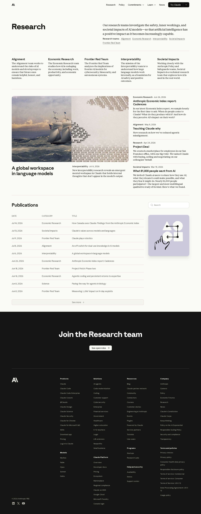

Brand Review
Coverage
Palette, typography, shape, motifs, voice, logo, screenshots, system components. All sections populated from live Playwright renders.
Logo
Source: inline SVG in site header (Lottie-animated wordmark). Renders "ANTHROPIC" in proprietary letterforms.
Palette
#faf9f5
#ffffff
#141413
#87867f
#cc785c
#b0aea5
#e8e5de
Source: _brand-extraction.json § palette. Cross-page aggregate of computed background-color, color, and border-color values. The palette is intentionally restrained — warm neutrals with a single terracotta accent.
Typography
| Role | Family | Weight | Notes |
|---|---|---|---|
| Heading | Anthropic Serif | 400 | Proprietary; fallback: Georgia |
| Body | Anthropic Sans | 400 | Proprietary; fallback: system sans |
| UI/Nav | Anthropic Sans | 500 | Buttons, navigation labels |
Source: _brand-extraction.json § type. Scale audit: ad-hoc (no strict modular ratio detected).
Shape & Motifs
Border Radius
Dominant: 16px (cards, containers) / 8px (buttons, small elements)
Shadows
Minimal — site uses borders rather than shadows for elevation. Near-zero shadow usage across all crawled pages.
Signature Motifs
- Warm neutral palette (cream + charcoal)
- Generous whitespace between sections (80-128px)
- Editorial serif typography for headlines
- Text-centric hero sections (headline-forward, minimal imagery)
- Subtle rounded corners without being playful
Voice
Hero Headline
"AI research and products that put safety at the frontier"
Lede
"Anthropic is an AI safety and research company that's working to build reliable, interpretable, and steerable AI systems."
CTA Labels
Try Claude • Contact sales • Learn more • Read more • Login
Register
Brand — formal-adjacent, thoughtful, measured. Academic clarity with startup energy.
System Components
Site Header
Logo (animated SVG) + horizontal navigation (Meet Claude, Platform, Solutions, Pricing, Resources) + CTAs (Login, Contact sales, Try Claude)
Site Footer
Multi-column link layout: Products, Models, Solutions, Claude Platform, Resources, Company sections + legal links
Card Grid
Used on homepage ("Latest releases") and research page. Cards with image, title, description, date.
Screenshots
Homepage

Claude Product Page

Research

Tensions
Site uses proprietary fonts (Anthropic Serif, Anthropic Sans) that are not available for reproduction. Downstream prototypes must use fallbacks (Georgia, system sans-serif) — the exact brand feel cannot be replicated without the original font files.
The header logo is a Lottie SVG animation, not a static asset. The extracted SVG captures one frame. Motion is lost in static reproduction.
The palette is extremely restrained (essentially monochrome with one warm accent). This is intentional per the brand's "clarity over decoration" principle, not a gap in extraction.